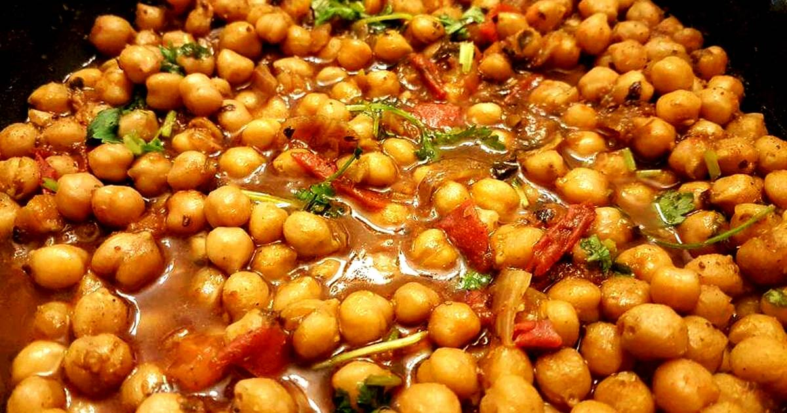

Indian Chole Recipe

Description
This is a delicious vegan Indian recipe where vegetables and chickpeas are served over small potato cakes. It works well as a starter for four, or as a vegetarian and vegan main for two. Place the potato cakes on a plate, serve the chickpeas on top, and don't forget the sauces! Recipes for Indian sauces - coriander sauce and tamarind sauce - are on this site. Finally, sprinkle with some fresh coriander leaves and a few thin slices of fresh onion.
Ingredients
- 2 potatoes
- salt and freshly ground black pepper to taste
- 3 ½ tablespoons vegetable oil, divided
- 1 tablespoon cornstarch
Steps
-
Place potatoes into a large pot and cover with salted water; bring to a boil. Reduce heat to medium-low and simmer until tender, about 20 minutes. Drain and peel.
-
Place cooked potatoes into a bowl and add cornstarch, ginger, cumin, cayenne, cilantro, salt, and pepper. Mash together with a fork. Oil your hands with a little vegetable oil and divide the potato mixture into 4 equal portions.
Pat each portion into a potato patty about 1/3-inch thick.
-
Heat 1 tablespoon vegetable oil in a skillet over medium heat. Fry potato cakes until golden, about 3 minutes on each side. Remove from heat and keep warm.